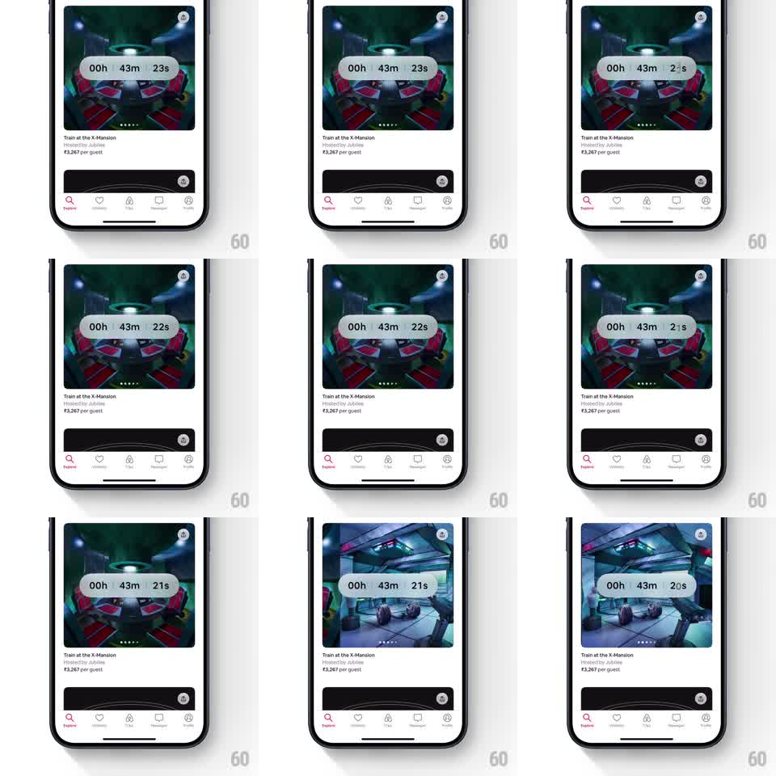

Media
Frame-by-frame

Rebuild this animation 1:1: Airbnb's Icons countdown - a frosted countdown pill with vertically rolling seconds digits, floating over an auto-advancing listing image carousel.

Rebuild this animation 1:1: Airbnb's Icons countdown - a frosted countdown pill with vertically rolling seconds digits, floating over an auto-advancing listing image carousel.
## Integration
Integration: stack-agnostic spec - springs given as stiffness/damping, timed motions as duration + curve; map every value to your framework and animation library of choice.
## Scene
An Airbnb listing card ("Train at the X-Mansion", hosted line, price per guest). The top image area is an auto-scrolling photo carousel with paging dots. Centered over the image: a frosted-glass pill reading "00h 43m 23s", the seconds ticking down with a rolling digit animation.
## Motion spec
Pattern: odometer countdown over crossfading carousel.
- Each second, the seconds digits roll: the outgoing digit slides up and out while the incoming rolls in from below (180ms, ease-in-out), with a slight motion blur mid-roll; the tens digit rolls only when it changes (with the ones digit, 30ms lag).
- Minutes/hours digits use the same roll when they tick, staggered 40ms from right to left.
- The pill is frosted: backdrop blur ~20px, white at 65% opacity, dark text; it stays pinned center over the image while the carousel moves behind it.
- The carousel auto-advances every ~4s: images crossfade with a slow 1.05x Ken Burns zoom (6s per image, alternating zoom in/out); paging dots swap their active pill (width animates 6px to 18px, 250ms).
- Card content below the image is static; all motion lives in the image band.
## Calibration
- Digit roll duration stays under 200ms - the tick should read as mechanical, not floaty.
- Pill never resizes as digits change: use tabular figures.
## Reduced motion
Digits change instantly; carousel crossfades without zoom.
## Don't miss
- The roll direction is always up-out/down-in regardless of which digit ticks.
- Keep the countdown pill legible over bright photos - the frost, not a shadow, does the work.